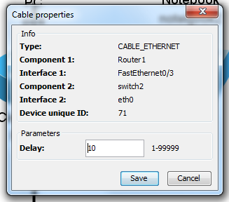

Tutorial 1: Network creation
- Welcome screen
- New project creation
- Placing components into board
- Connecting components with cables
- Network manipulation
- Setting network components properties
- Viewed details settings
- Saving the project
Setting network components properties
In this part of the tutorial, we will set parameters of cables and components.
Settings will be shown on following network:

Component properties
You can access component properties by clicking Right mouse button on the component and selecting Properties in shown popup menu

Properties of routers and End devices
In properties of routers and End devices you cen set Device name, MAC address, IP address and Is up (turned on).
MAC address is generated automatically. Example of component properties follows:

Switch properties
In switch properties we set only Device name. The rest of the dialog contains information about connected components.

Cable properties
You can access cable properties again using right mouse button on the cable. In the popup menu select Properties option:

In the properties we set cable delay. This value will be used in packet playing in Simulator mode.
Next part of this tutorial is: Viewed details settings.